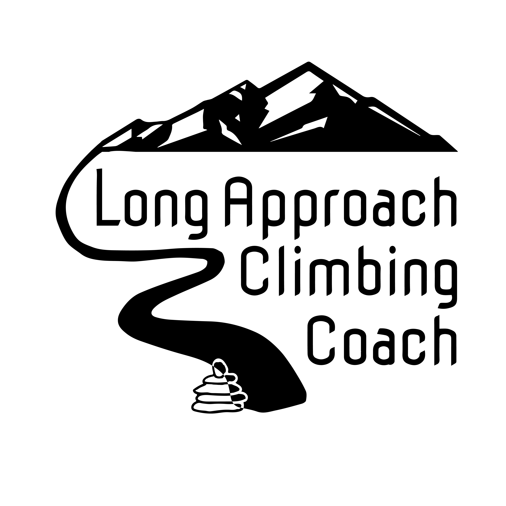

Joshua Kanel
Climbing Coach, Certified Strength and Conditioning Specialist
Certifications/ Qualifications
- NSCA Certified Strength and COnditioning Specialist
- Performance Climbing Coach (PCC)
- 10+ years of climbing experience, with redpoints up to 5.14a
- Experience coaching a range of climbers from beginner to advanced
Education
- Humboldt State University (2014-2021)
- B.S. with a major in Biology and a minor in Kinesiology
- San Ramon Valley High School (2010-2014)
Work Experience
- High Mountain Fitness
- Lander Bread Share
Website

Contact